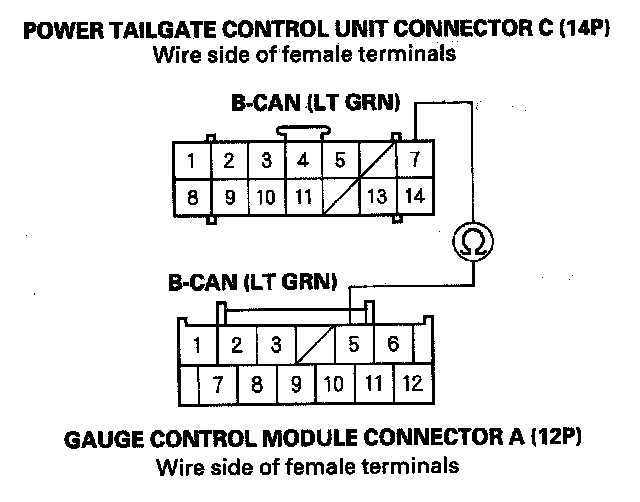

B1786
DTC B1786: HandsFreeLink Control Unit Lost Communication with Gauge Control Module (VEHINFO Frame)NOTE: If you are troubleshooting multiple DTCs, be sure to follow the instructions in B-CAN System Diagnosis Test Mode A.
1. Connect the HDS to the DLC.
2. Clear the DTC with the HDS.
3. Turn the ignition switch OFF, then turn it ON (II) and wait 6 seconds or more.
4. Check for DTC with the HDS.
Is DTC B1786 indicated?
YES - Go to step 5.
NO - Intermittent failure. VEHINFO frame is OK at this time. Check for poor connections or loose terminals at the HandsFreeLink control unit.
5. Check for DTC with the HDS.
Is DTCB1011, B1032, B1060, B1061, B1205, B1206, B1207, B1906, B1956, B2157, B2160 indicated?
YES - Go to step 6.
NO - HandsFreeLink control unit is faulty, replace the HandsFreeLink control unit.
6. Select the UNIT INFORMATION MENU from the HDS, and do the CONNECTED UNIT.
7. Check the AVAILABLE/NOT AVAILABLE information of the gauge control module in the CONNECTED UNIT.
Is the information indicator NOT AVAILABLE?
YES - Go to step 8.
NO - Gauge control module is faulty, replace the gauge control module.
8. Turn the ignition switch OFF.
9. Disconnect the gauge control module connector A (12P).
10. Turn the ignition switch ON (II).
11. Measure the voltage between body ground and gauge control module connector A (12P) terminals No. 7.
Is there battery voltage?
YES - Go to step 12.
NO - Check the No. 21 (7.5 A) fuse in the under-dash fuse/relay box. If the fuse are good, repair open in the wire between the No. 21 fuse in the under-dash fuse/relay box and the gauge control module.
12. Turn the ignition switch OFF.
13. Disconnect the gauge control module connector B (24P).
14. Check for continuity between body ground and gauge control module connector A (12P) terminal No. 2 and gauge control module connector B (24P) terminal No. 13 individually.
Is there continuity?
YES - Go to step 15.
NO - Repair open in the wire(s) between body ground and the gauge control module.
15. Disconnect the power tailgate control unit connector C(14P).

16. Check for continuity between the power tailgate control unit connector C (14P) terminal No. 7 and gauge control module connector A (12P) terminal No. 5.
Is there continuity?
YES - Gauge control module is faulty, replace the gauge control module.
NO - Repair open in the wire between power tailgate control unit and the gauge control module.